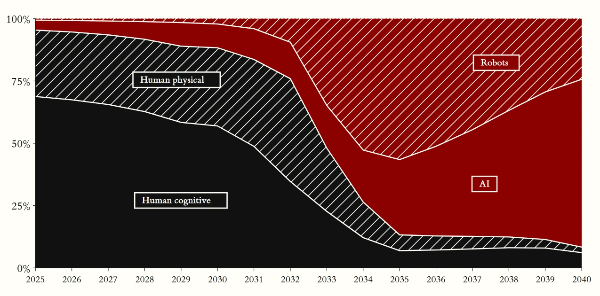
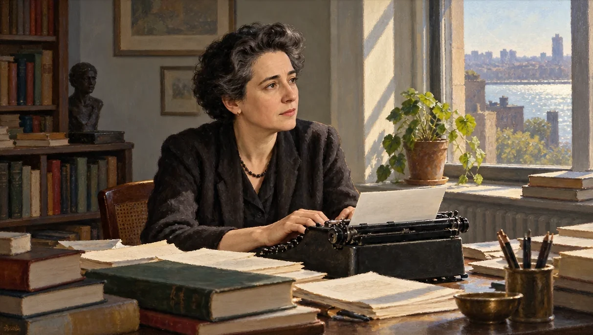
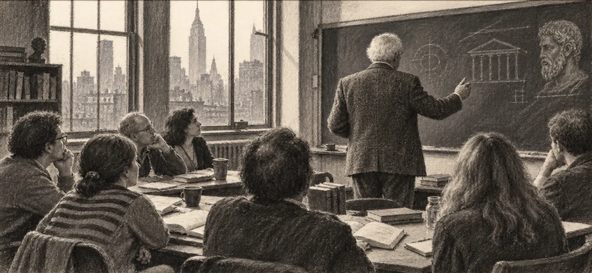
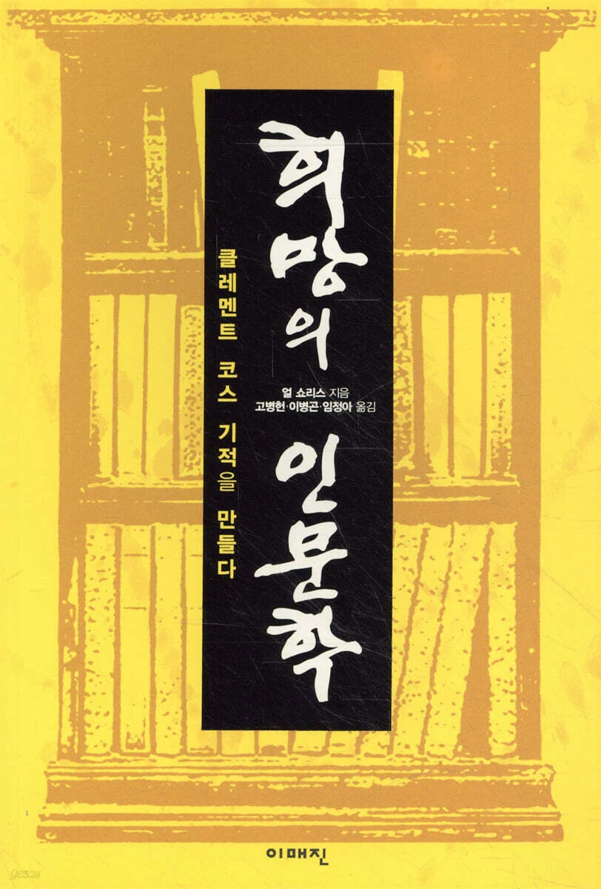

뱃사람은 별에 가려고
별을 읽지 않았습니다.
길을 찾으려 바라보았습니다.
그림 한 점, 음악 한 곡, 별 하나를 만나다가
어느 날 책 한 권을 손에 듭니다.
함께 원정길에 오를 대원을 모으고 있습니다. EG 둘러보기
대교양의 시대
노란 화살표를 칠하던 신부 엘리아스 발리냐는 피레네의 한 마을에서 경찰에게 붙잡힌 적이 있습니다. 무엇을 하느냐는 물음에 그는 이렇게 답했습니다.
「프랑스에서 넘어올 대침공을 준비하고 있습니다.」
그가 세상을 떠나고 몇 해 뒤, 잊혀 가던 산티아고 순례길은 정말로 순례자들로 붐비기 시작했습니다.
미국의 한 AI 연구단체는 2040년 미국 경제에서 사람이 맡는 노동의 몫이 10분의 1 아래로 내려가리라고 내다봅니다.

같은 보고서는 이후 벌어질 경제적 파장까지 연구해 두었습니다. 그 답이 「시민 배당」입니다. AI와 로봇이 만든 부에서 거둔 돈을 모든 미국 시민에게 똑같이 나누어, 사람이 일해서 받던 월급이 줄어든 자리를 채운다는 것입니다. 저자들도 이 구상이 그대로 이루어지리라 믿지는 않는다고 밝혔지만, 가리키는 방향은 분명해 보입니다.
일은 AI와 로봇이 하고, 돈 걱정은 사라지고, 시간만 넉넉히 남는 세상. 사람이 수천 년 꿈꿔 온 그 세상입니다. 그런데 그 세상을 먼저 살아 본 사람이 있습니다.
서른 몇 살에 회사를 팔고 100억 원쯤을 손에 쥔 사람입니다. 20대부터 일만 했고, 그 일을 잘했습니다. 이제 시간도 돈도 넉넉했습니다. 그런데 얼마 뒤 그분은 이렇게 말했습니다.
「나는 지금껏 내가 취향이 없는 사람이란 걸 몰랐다.」
하고 싶은 것이 없었던 것입니다. 일할 때는 그 빈자리를 일이 채우고 있어서 몰랐습니다.

철학자 한나 아렌트는 사람이 하는 일을 셋으로 나누었습니다. 살기 위해 되풀이하는 노동(labor), 세상에 무언가를 남기는 작업(work), 사람들 사이에서 말하고 움직이는 행위(action)입니다. 공장이 하나둘 자동화되던 1958년, 아렌트는 이렇게 썼습니다.
「노동 없는 노동자들의 사회. 이보다 더 나쁜 것은 없을 것이다.」
출처: 한나 아렌트, 『인간의 조건』(The Human Condition, 1958) 머리말 — 원문 “a society of laborers without labor … Surely, nothing could be worse.”
평생 노동만 해 온 사람에게는 노동이 멈춘 자리에서 작업과 행위로 건너갈 다리가 없다는 뜻입니다. 100억 원을 쥔 그분이 선 곳이 바로 그 다리 없는 강가였습니다. 머지않아 많은 사람이 같은 강가에 서게 됩니다.
그 강가에서 사람이 가장 먼저 만나는 것은 「오늘은 뭘 하지」 하고 묻는 아침입니다.
그 물음의 답은 누구도 대신 찾아 주지 못하고, 돈으로도 살 수 없습니다. 좋은 그림과 음악과 책과 사람을 오래 만나며 몇 해에 걸쳐 자라는 힘이니까요. 오래전부터 사람들은 이 힘을 기르는 일을 교양이라고 불렀습니다.
일도 돈 걱정도 떠난 자리에서, 자기 삶을 채우는 일이 사람에게 남는 가장 큰 일이 되는 시대. 수많은 사람이 그 허기를 안고 한꺼번에 몰려오는 시대. EG유니버스는 이것을 대교양의 시대라고 부릅니다. 발리냐 신부가 말한 대침공이 우리에게는 이런 모습일 겁니다.
화살표는 순례자가 몰려온 뒤에 칠하면 늦습니다. 교양도 허기를 느낀 날 시작하면 늦습니다. 몇 해가 걸리는 일이니까요.
100명 가운데 한두 명은
이 글을 읽다가 「이거 내 얘긴데」 합니다.
그렇게 드문 분들을 위해 차린 식탁입니다.
먼저 만나게 합니다
그럼 교양은 어떻게 기를까요. 답은 오래전에 나와 있습니다. 좋은 책을 깊고 넓게 읽고, 읽은 것에 관해 쓰고, 좋은 강의를 듣는 것. 2,000년 동안 옳았고 지금도 옳습니다.
파리 라탱 지구의 콜레주 드 프랑스는 500년 가까이 누구에게나 문을 열어 두었습니다. 등록도 수업료도 시험도 없이, 오늘 오후에도 세계에서 가장 앞선 강의가 열립니다. 그런데 사람들은 그 앞을 그냥 지나갑니다.
문이 잠겨서가 아닙니다. 어디서부터인지 모르고, 곁에 한마디 해 줄 사람이 없고, 석 달을 읽어도 달라진 것이 손에 잡히지 않아서입니다. 옳은 답이 막막한 답이 되는 자리입니다.
그래서 EG유니버스는 순서를 뒤집었습니다. 먼저 읽히지 않고, 먼저 만나게 합니다.
그림 한 점, 곡 하나, 한 사람의 생애.
그 가운데 어딘가에서 마음이 걸립니다. 걸리면 그 사람이 궁금해지고, 궁금하면 그 사람이 쓴 것을 읽고 싶어집니다. 그때 처음으로 책이 손에 들립니다. 읽으라고 해서 읽는 것과 읽고 싶어져서 읽는 것은 전혀 다른 독서입니다.
처음에는 아주 느립니다. 한 문장이 한 사람으로, 한 사람이 그가 살던 도시로, 그 도시에서 같은 시대를 산 화가로 이어지며 점이 선이 되고 선이 면이 됩니다. 점이 충분히 많아지면, 어느 날부터 저절로 이어지기 시작합니다.
요란하지 않게 합니다. EG유니버스에는 순위도 댓글도 재촉하는 알림도 없습니다. 무엇을 읽었는지, 어느 별을 사랑하는지는 본인만 압니다.
EG은교 — 은은하게 스며드는 교양
가장 낮은 곳에서
여기까지 읽으신 분 가운데 이런 생각이 드신 분이 있을 겁니다. 결국 시간과 돈이 넉넉한 사람들 이야기 아닌가. 당장 먹고사는 일이 급한 사람에게 교양은 사치가 아닌가.
그 물음에 온몸으로 답한 사람이 있습니다.
「사람들이 왜 가난한 것 같습니까?」
가난에 관한 책을 쓰던 미국의 작가 얼 쇼리스가 뉴욕의 한 여자 교도소에서 재소자에게 던진 물음이었습니다. 그 여성의 대답은 이랬습니다.
「시내 중심가 사람들의 정신적인 삶이 없어서요.」
극장, 박물관, 음악회, 강연회. 그런 것들을 어릴 때부터 만났더라면 지금과 달랐을 거라고요.
쇼리스는 그 말을 안고 돌아와 이듬해 강좌 하나를 열었습니다. 학생은 노숙인과 전과자, 홀로 아이를 키우는 어머니들이었고, 가르친 것은 플라톤과 소크라테스, 미술사와 시와 논리학이었습니다. 대학에서 가르치는 그대로, 대학 교수들이 와서 가르쳤습니다. 사람들은 미쳤다고 했습니다.
한 해가 지났을 때 끝까지 남은 사람들의 삶이 눈에 띄게 달라져 있었습니다. 직장을 얻은 사람도, 대학에 간 사람도 있었지만 쇼리스가 눈여겨본 것은 따로 있었습니다. 말하는 방식이 달라졌고, 화를 내는 방식이 달라졌고, 자기 삶을 한 발 떨어져서 볼 줄 알게 되었습니다.

그 강좌가 클레멘트 코스입니다. 지금도 여러 나라에서 이어지고 있고, 우리나라에서도 노숙인을 위한 인문학 강좌로 뿌리를 내렸습니다. 그 기록이 한 권의 책으로 남아 있습니다.

EG유니버스를 지은 사람에게도 그런 시간이 있었습니다. 책을 11권 쓰고 30년 출판사를 꾸린 뒤, 2년 남짓 새벽 인력시장에 나가 일했습니다. 낮에는 흙을 파고, 밤에는 문장을 팠습니다.
그 2년 동안 한 가지를 몸으로 알게 되었습니다. 오래 갈아 둔 정신의 영토가 있으면, 세상이 어떤 값을 매기든 그 값이 안으로 들어오지 않는다는 것. 쇼리스의 학생들이 플라톤을 읽고 알게 된 것도 그것이었습니다.
EG유니버스의 얼개는 그 2년 동안 자랐습니다. 5분이면 마시는 한 잔, 저녁이면 문 여는 미술관, 밤이면 열리는 천문대. 전부 몸으로 하루를 다 쓴 사람의 저녁에도 들어갈 수 있는 크기로 지었습니다. 그 크기는 책상이 아니라, 인력시장에서 돌아온 저녁에서 나왔습니다.
허기는 계층의 것이 아닙니다.그래서 가장 낮은 곳에서도 자라는 것을 짓습니다.